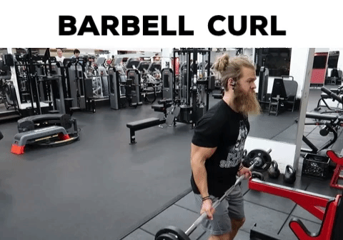

Stand up with your torso upright while holding a barbell at a shoulder-width grip. The palm of your hands should be facing forward and the elbows should be close to the torso. This will be your starting position.
While holding the upper arms stationary, curl the weights forward while contracting the biceps as you breathe out. Tip: Only the forearms should move.
Continue the movement until your biceps are fully contracted and the bar is at shoulder level. Hold the contracted position for a second and squeeze the biceps hard.
Slowly begin to bring the bar back to starting position as your breathe in.
Repeat for the recommended amount of repetitions.